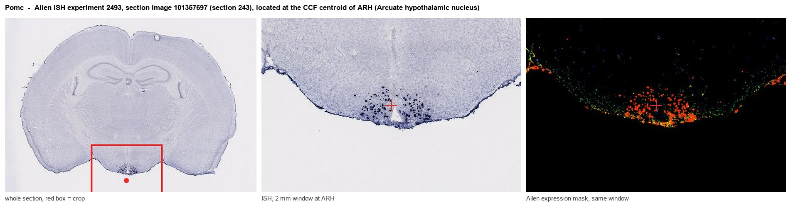
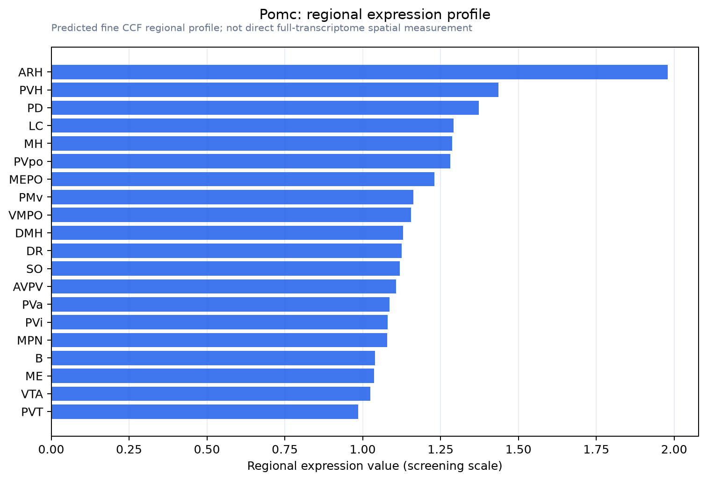

Pomc
Spatial tier: REGION_BIASED · Class: OTHER · Top region: ARH (Arcuate hypothalamic nucleus) · Positive regions: 30/554
42.4Discovery Score
39.1Targetability Score
CEvidence grade C
What this means: Pomc: fine CCF profile is region-biased toward ARH (top regions: ARH, PVH, PD, LC, MH); this is a discovery lead, not direct proof.
Function in ARH: evidence, prediction, innovation
- Gene function
- Pomc encodes pro-opiomelanocortin, a prohormone cleaved by prohormone convertases into alpha-MSH, ACTH and beta-endorphin. Alpha-MSH is the endogenous agonist at the Gs-coupled melanocortin receptors MC3R/MC4R, while beta-endorphin acts at mu-opioid receptors. Loss of POMC signalling causes hyperphagia and severe early-onset obesity in mice and humans.
- Region function
- The arcuate nucleus sits at the base of the hypothalamus next to the median eminence, where AgRP/NPY and POMC neurons sense leptin, ghrelin and nutrients to set food intake and energy expenditure; its kisspeptin and dopaminergic neurons also gate GnRH pulses and prolactin.
- Published in this region
- direct Direct and extensive. Balthasar et al. 2004 showed that deleting the leptin receptor only in POMC neurons causes obesity; Zhan et al. 2013 showed arcuate POMC neurons suppress feeding on a slow timescale while NTS POMC neurons act acutely; Campbell et al. 2017 resolved arcuate POMC cells into several transcriptomic subtypes by Drop-seq.
- Predicted function
- Prediction (already largely confirmed): Pomc in ARH is the anorexigenic arm of the melanocortin system. Chemogenetic activation of these neurons lowers food intake over hours; arcuate-restricted Pomc deletion gives hyperphagic obesity rescuable by MC4R agonists such as setmelanotide. What remains open is which Lepr+, Glp1r+ or Htr2c+ subpopulation carries each phenotype.
- Innovation
- ★☆☆☆☆ 1/5 POMC in the arcuate nucleus is one of the best-characterised gene-region pairs in metabolic neuroscience.
- Tools
- Pomc-Cre (JAX 005965, Tg(Pomc1-cre)16Lowl/J), Pomc-eGFP reporters, floxed Pomc and Lepr alleles, intersectional Cre/Dre lines; MC3R/MC4R ligands MTII, SHU9119 and setmelanotide; alpha-MSH and beta-endorphin antibodies.
- References
Direct evidence located at the region

Allen ISH experiment 2493, section image 101357697 (section 243): the section that contains the CCF centroid of Arcuate hypothalamic nucleus according to the Allen image-to-atlas alignment (reference_to_image), with a 2 mm window around that point. Left: whole section, red box = window. Middle: ISH signal. Right: Allen's expression-mask view of the same window. open this image in the Allen viewer
Look it up yourself: Allen Mouse Brain ISH for PomcAllen reference atlas: ARH (structure 223)ABC Atlas MERFISH viewer(in the ABC Atlas choose dataset MERFISH-C57BL6J-638850-CCF, colour cells by gene "Pomc" or by parcellation_substructure "ARH")All genes confined to ARH + 3-D brain
Direct spatial evidence
MERFISH REGION LOCATOR

Regional expression figure

Predicted WMB × fine-CCF profile; not direct full-transcriptome spatial measurement.
Spatial profile
Evidence and specificity
- Evidence status
- PREDICTED_FINE
- Direct sources
- None; predicted localization only
- Exclusive threshold
- 12 positive regions out of 554
- Spatial specificity
- 0.301
- Top-region fraction
- 0.055
- Filter status
- PASS
Interpretation limits
- Cell-type-to-region projection is imputed expression, not direct spatial measurement.
- Adult reference atlases do not establish stability across age, sex, strain, state, or disease.
- Transcript abundance does not guarantee protein abundance or genetic-tool performance.